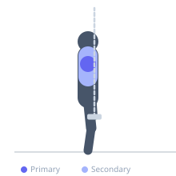

Exercise guide / Band Teardrop Lateral Raise
Band Teardrop Lateral Raise
The band teardrop lateral raise traces a teardrop-shaped arc — raising the arms out to the side, then bringing them together overhead before returning. The combined abduction and overhead phase trains the medial deltoid through its full range of abduction while the overhead convergence challenges the upper trapezius and serratus anterior. The continuous band tension through the arc provides loading at positions that dumbbells cannot match.
Primary muscles
deltoid lateral
Secondary muscles
deltoid anterior
trapezius upper
Equipment
Resistance Band (Loop / Mini Band)


Starting position
- Stand with both feet on a resistance band loop. Hold each side of the band with the corresponding hand. Bands hang beside the thighs.
Setup
- Adjust foot position on the band to control tension. Light to moderate band tension for high quality reps.
Steps
- Step 1: Begin with arms at sides, hands on the band.
- Step 2: Raise both arms out to the sides in a standard lateral raise to shoulder height.
- Step 3: Continue the arc, bringing the hands together overhead.
- Step 4: Lower the hands back overhead to the sides, then return to the starting position.
- Step 5: One rep = out, up, together, down, in.
Coaching cues
- Draw a teardrop shape with both hands
- Lead with the elbows, not the hands
- Pinkies up throughout the raise
Breathing
- Exhale on the raise. Inhale returning.
Range of motion
- Full arc from sides to overhead and back.
Tempo
- 2-1-2-0
Common mistakes
- Breaking the arc — the motion should be smooth and continuous
- Insufficient tension — the band should be taut at the starting position
Safety
- Light loads only — high-rep focused exercise for deltoid pump and mobility
- Avoid if shoulder impingement is present
Training
- hypertrophy: 12–20 reps
- hypertrophy: 3–4 sets
- Rest: {'hypertrophy': 60}